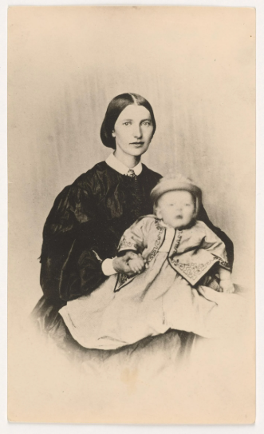
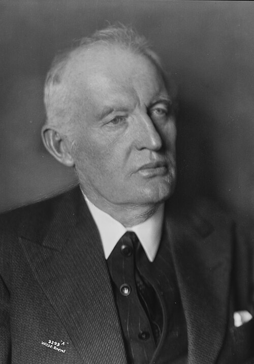

Trykk på bildet for å lese

Barndom og oppvekst
Barndom og oppvekst
Født 12. desember 1863 i Løten, og har vokst opp i Kristiania, som nå heter Oslo. Han har vokst opp i en familie preget av sykdom, sorg og økonomiske utfordringer. Moren hans døde av tuberkulose (bakterieinfeksjon) når han var bare 5 år gammel. Edvard Munch var ofte syk som barn og holdt seg hjemme mesteparten av tiden, og det er en av grunnene til at han utviklet sin interesse for tegning og maling.

Ungdom og voksenliv
Ungdom og voksenliv
Edvard Munch begynte å studere ved en teknisk skole, men han sluttet i 1880 for å følge drømmen sin, som var om å bli kunstner. Deretter begynte han på Den kongelige tegneskole i Kristiania, hvor det fikk han til å utvikle sine ferdigheter med kunst. Edvard Munch slet mye med alkohol, og i 1908 ble han innlagt på en klinikk i København. Etter behandlingen flyttet han tilbake til Norge.

Siste leveår
Siste leveår
I 1916 kjøpte Edvard Munch en eiendom i Ekely, Kristiania. Der bodde han og arbeidet for resten av livet. Han hentet ofte inspirasjon fra naturen, omgivelsene og sitt eget liv. Under andre verdenskrig levde han isolert på Ekely. Helsen hans ble samtidig dårligere, men han fortsatte å arbeide med kunsten sin. Edvard Munch døde 23 januar 1944 (80 år gammel). I dag regnes han som en av Norges mest betydningsfulle kunstnere.